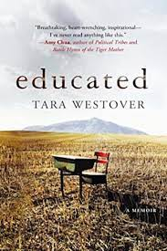

Educated (2018) is a memoir by the American author Tara Westover. Westover recounts overcoming her survivalist
Mormon family in order to go to college, and emphasizes the importance of education in enlarging her world. She
details her journey from her isolated life in the mountains of Idaho to completing a PhD program in history at
Cambridge University. She started college at the age of 17 having had no formal education. She explores her struggle
to reconcile her desire to learn with the world she inhabited with her father.
As of the September 13, 2020, issue of The New York Times, the book had spent 132 consecutive weeks on the Hardcover
Non-Fiction Best Seller list.[2] It won a 2019 Alex Award and was shortlisted for the Los Angeles Times Book Prize,
PEN America's Jean Stein Book Award, and two awards from the National Book Critics Circle Award.[3]

Summary
The memoir is told in three parts. The first part describes Westover's life beginning on Buck's Peak, a mountain
located in rural Idaho, until her acceptance into Brigham Young University (BYU). Her parents, Gene and Faye
Westover (pseudonyms) lived in isolation. Her father was paranoid about hospitals, the public school system, and the
government, due in part to the 1992 events of Ruby Ridge. Westover's mother undertook most of the children's loose
homeschooling and her father taught the children the "rhythms of the mountain".
Tara's attempts to attend school or seek other normality in her life were denied by her father. Gene becomes
depressed when his prophecies about the Y2K apocalypse did not occur. When Tara suffers a neck injury from a car
accident, her father refused to take her to the hospital for treatment. Tara's estranged brother Shawn helped her
and the two initially grew closer. However, Shawn started physically abusing her after she became close to Charles,
a boy she met while performing in theater. Another of Tara's brothers, Tyler, learned of the abuse and encouraged
her to leave home and take the ACT to be able to apply to Brigham Young University. Westover was later admitted to
BYU and given a scholarship. She and Shawn became close again after he stood up to their father on her behalf. When
Shawn has a serious motorcycle accident, she takes him to the hospital.
Part two covers Westover's studies at BYU and King's College, Cambridge. She received financial awards that allowed
her to attend Cambridge. She describes the stress she felt from the pressure of having to maintain her grades in
order to keep her scholarship, as well as the issues she runs into due to her alienation from the outside world and
lack of formal schooling. Later, Tara also reconnects with Charles, but feels like she cannot act romantically
towards him because of her conservative upbringing. She also questions the abuse she endured from her father and
Shawn, which results in her breaking off her relationship with Charles.
Westover realizes that she no longer feels at home in Idaho, and worries that her father may have bipolar disorder.
She cuts ties with him, but reconnects after he expresses interest in her life at school. After Shawn marries Emily,
a young woman he was dating, Tara worries about Emily who previously expressed fear of Shawn. Interested in history
and politics, Westover confides to one of her professors about her family. Her professor encourages her to apply for
the study abroad program at the University of Cambridge. After arriving at King's College, Tara is assigned to work
with Professor Jonathan Steinberg. Both of her professors encourage her to attend graduate school. Westover applies
for and wins the Gates Scholarship. She also makes a temporary truce with her father, after the two had a falling
out over how she spoke about her past to local news outlets as well as her decision to attend school in England.
In Part three, Westover writes about her life in Cambridge and completing her PhD. She takes steps to be part of the
world, including getting immunized for vaccinations her family rejected. She occasionally returns to Idaho where she
learns that Shawn is still abusing Emily. Her sister, Audrey, learned about Shawn's behavior, but their mother did
not believe her. Eventually, Tara and her mother take up email correspondence. During this period, her mother
suggests that Gene is mentally ill and writes about how they plan to get Shawn the help he needs. On another trip
home, Shawn briefly shows signs of change, but later accuses Audrey of lying about his abusive behavior and
threatens to kill her. Gene and Faye do not take Tara seriously when she tells them about Shawn's threat.
Tara encounters Shawn with a bloody knife on another visit home. Terrified, Tara lies and claims that her father
lied about Shawn's treatment to Audrey. Later, she realizes that her mother had never been on her or Audrey's side.
After returning to England, Shawn threatens her life. Audrey also cuts ties with Tara, claiming she is under Satan's
control. Westover then begins graduate school at Harvard and her parents briefly visit and try to convince her to
come home.
After returning home again, Westover discovers that an ex-girlfriend of Shawn's wrote to her mother that she was
delusional and demonizing her brother. Westover returns to Harvard and eventually England. After suffering panic
attacks, she ends contact with her parents for a year in an effort to recover. She struggles in her studies, but is
encouraged by her brother Tyler. She successfully completes her PhD. Years later Westover returns to Idaho for her
maternal grandmother's funeral. She is reunited with Tyler and his wife, as well two maternal aunts. She is also
reunited with her siblings, most of whom still take their father and Shawn's side. At the end of the memoir, Tara is
in touch with only a few family members and comes to accept that she needs to be away from the mountain.